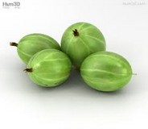

|  | The gooseberry (American and northern British) (southern British)), with scientific names Ribes uva-crispa (and syn. Ribes grossularia), is a species of Ribes (which also includes the currants). It is native to Europe, the Caucasus and northern Africa. The species is also sparingly naturalized in scattered locations in North America. Gooseberry bushes produce an edible fruit and are grown on both a commercial and domestic basis. Its native distribution is unclear, since it may have escaped from cultivation and become naturalized. For example, in Britain, some sources consider it to be a native, others to be an introduction. Although usually placed as a subgenus within Ribes, a few taxonomists treat Grossularia as a separate genus, although hybrids between gooseberry and blackcurrant (e.g., the jostaberry) are possible. The subgenus Grossularia differs somewhat from currants, chiefly in their spiny stems, and in that their flowers grow one to three together on short stems, not in racemes. It is one of several similar species in the subgenus Grossularia; for the other related species (e.g., North American gooseberry Ribes hirtellum), see the genus page Ribes. |